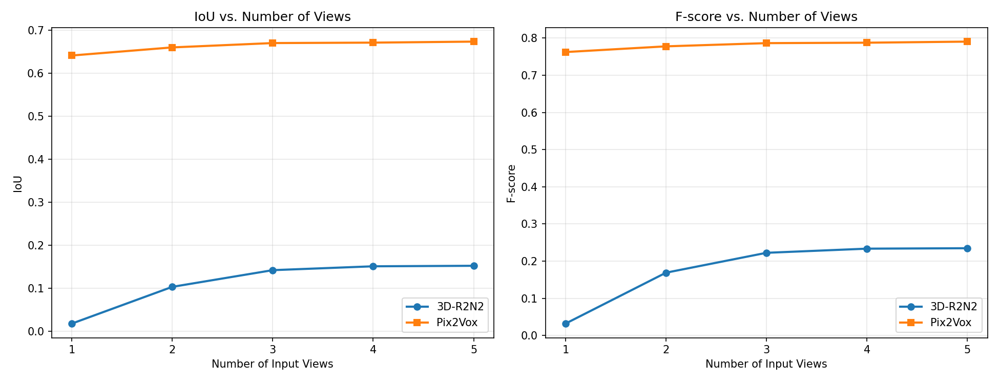
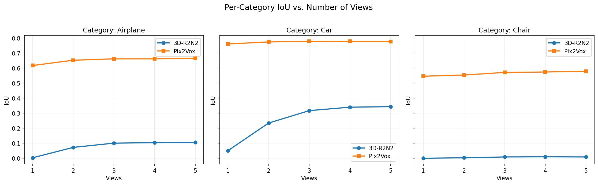
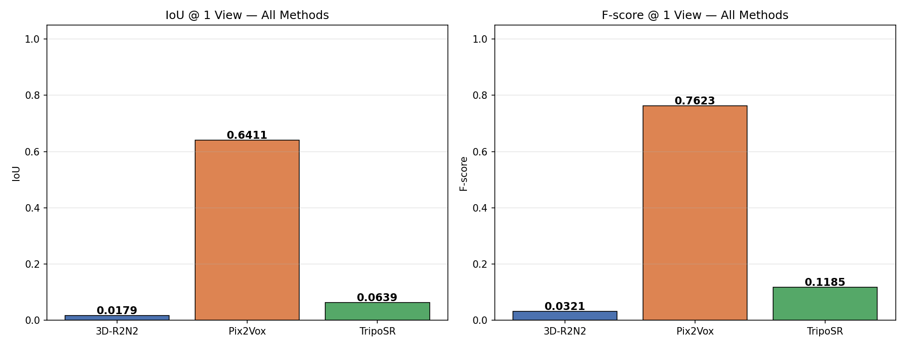
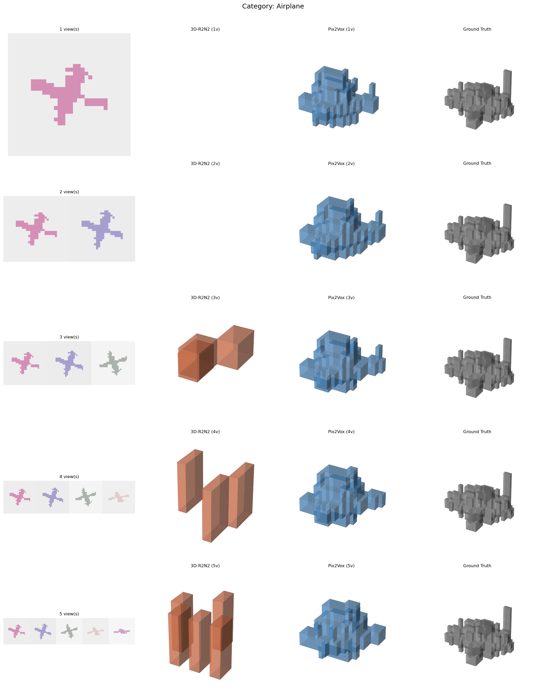
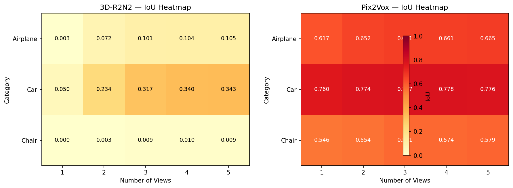

Reconstructing 3D geometry from sparse 2D observations is inherently ill-posed — depth ambiguity and occlusion make it impossible to recover a unique solution from limited views.
How does reconstruction quality evolve as the number of input views increases from 1 → 5, and which method best handles limited observations?
Loss: Binary Cross-Entropy on voxel occupancy | Optimizer: Adam (lr=1e-4) | Epochs: 20 | Best checkpoint saved & reused
Pre-trained on Objaverse (800K+ objects). Inference: ~0.5–1s/image on GPU. Background removal via rembg, composited on gray (0.5) background as per official pipeline.
R2N2 & Pix2Vox are trained on this dataset.
TripoSR is zero-shot — never sees our data.
| Views | R2N2 IoU | Pix2Vox IoU | R2N2 F | Pix2Vox F |
|---|---|---|---|---|
| 1 | 0.024 | 0.639 | 0.043 | 0.763 |
| 2 | 0.103 | 0.653 | 0.166 | 0.775 |
| 3 | 0.140 | 0.669 | 0.220 | 0.789 |
| 4 | 0.148 | 0.668 | 0.230 | 0.788 |
| 5 | 0.149 | 0.670 | 0.231 | 0.790 |

Pix2Vox outperforms R2N2 by ~26× at 1 view (0.639 vs 0.024). Diminishing returns set in beyond 3 views for both methods.

R2N2: 0.004 → 0.103 (+0.099)
Pix2Vox: 0.618 → 0.657 (+0.038)
Winner: Pix2Vox
R2N2: 0.068 → 0.335 (+0.267)
Pix2Vox: 0.763 → 0.773 (+0.010)
Winner: Pix2Vox
R2N2: 0.000 → 0.010 (+0.010)
Pix2Vox: 0.537 → 0.580 (+0.043)
Winner: Pix2Vox
Chairs are hardest — thin legs & heavy occlusion cause near-zero IoU for R2N2 even at 5 views.

| Method | Training? | IoU (1-view) | Speed |
|---|---|---|---|
| 3D-R2N2 | Yes | 0.024 | ~5 ms |
| Pix2Vox | Yes | 0.639 | ~5 ms |
| TripoSR | No (zero-shot) | see notebook | ~500 ms |
Routes each (category, views) pair to the best model. Always selects Pix2Vox — confirming its uniform dominance on synthetic data.


Single-view produces blobby outputs for R2N2. Pix2Vox maintains shape even at 1 view. Both improve with more views but show diminishing returns beyond 3 views. Thin structures (chair legs) remain consistently under-reconstructed.
Key Findings
MM 805 — Multimedia | University of Alberta | Winter 2026
Choy et al. (ECCV 2016) · Xie et al. (ICCV 2019) · Tochilkin et al. (2024)